Most cruises exploring the wonders of the Last Frontier begin their journey from the busy docks of Seattle. It was from here that we boarded our ship to begin our voyage.
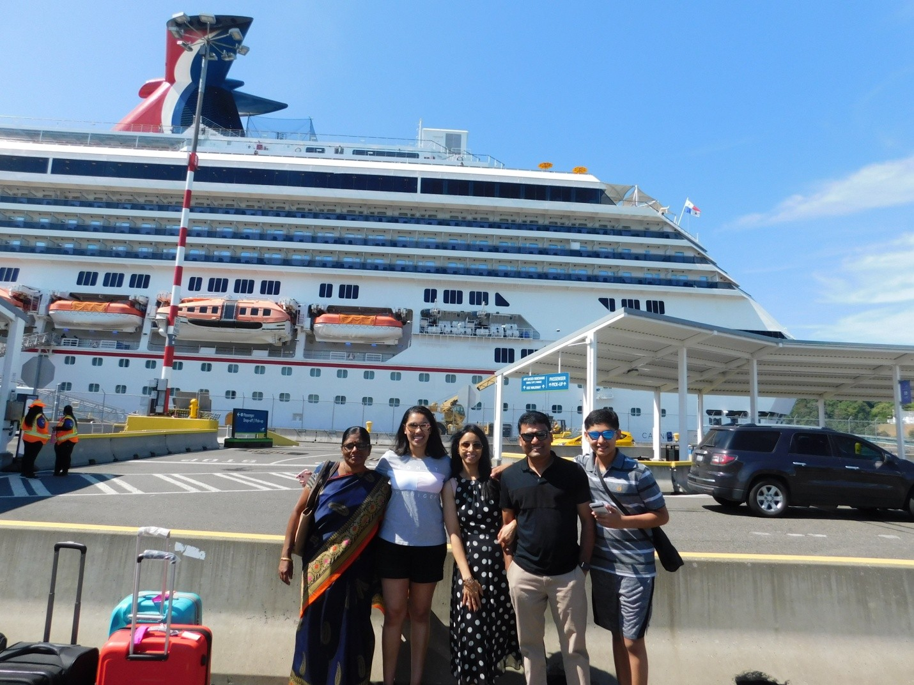
The cruise name: Carnival Splendor. It had 14 decks. On each deck, one row of rooms was on the left side, two rows of rooms were in the middle, and one was on the right side. In each deck, about 100 rooms were there. And about 4,000 people were traveling.
Rooms had an attached bath, every day bed sheets and towels were changed and toilets were cleaned.
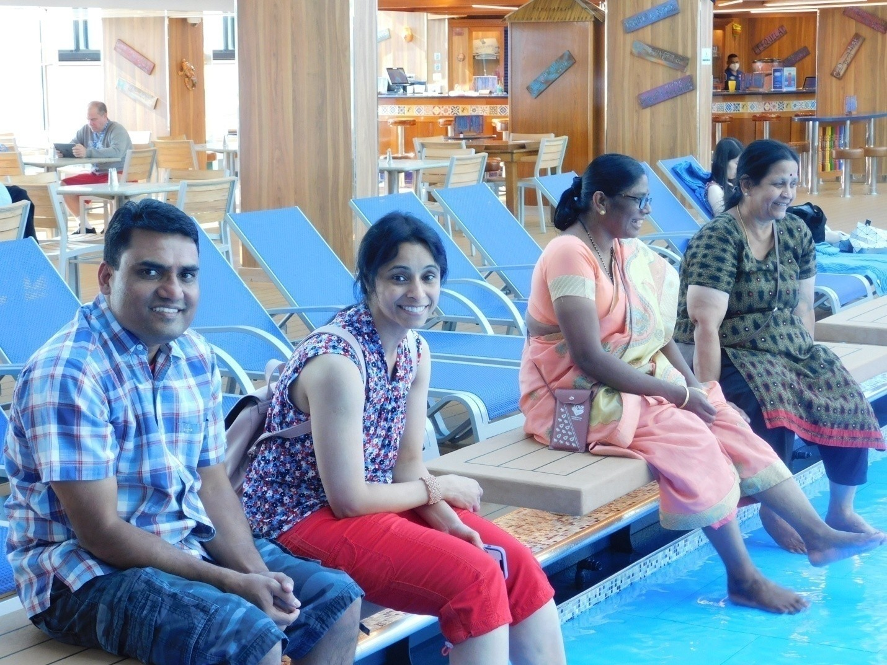
Apart from the staircases, many elevators were also there to move from deck to other decks. It was a huge cruise. Apart from rooms, huge dining halls, swimming pools, table tennis, and a gym with many treadmills, static cycles, and many more pieces of equipment for doing exercises were all found.
Different food counters were there to serve a variety of food. Tiger Masala was providing Indian food. Apart from a few Indians, this counter was crowded with lots of Americans. In this counter, normally butter naan, rice, dal, a few Indian vegetarian subjis, non-vegetarian items, kachori or samosa, dahi vada, papad, salads, etc. were served.
Coffee machines and juice machines were working all the time. Also, ice creams of a few varieties were kept open all the time. Fruits – bananas, apples, pears, and watermelons were kept during breakfast, lunch, and dinner.
The cruise was sailing throughout at a speed of around 30 mph. During the second day, the ship was moving between the mountains in a narrow valley. During that time, the cruise was moving at a slow speed. On the second day, the ship was crossing over glaciers. Optional tour arrangements were available; from the ship, interested people shifted to smaller boats to have a closer look at glaciers.
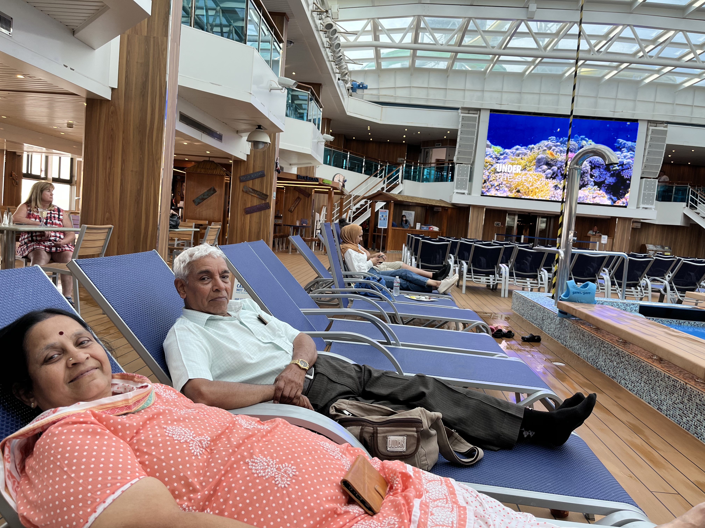
We (myself, Lakshmi, Shashi, Uma, Tanvi, Athu, and Shashi’s mom) left home around 12 PM in our car to Seattle Port. The drive was about an hour. After reaching the port, from the car parking place of the cruise, we boarded a minibus with our suitcases and reached the boarding point.
Just like an airport, our luggage was scanned, then we stood in the queue for boarding passes. Since this cruise was passing through Canadian territory to travel to Alaska by cruise, one needs a Canadian visa. Shashi arranged to get a Canada visa, and we got visas for 2 years.
Many counters were there for issuing boarding passes; still, it took an hour for us to get the boarding pass. At last, we boarded the cruise around 3 PM. We all received a photo ID card, and the card was used as a key to open our cabin. After putting our suitcases in our rooms, we went to the 4th deck to get safety instructions. After that, we went to the 9th deck where the restaurant was located. We took ice cream, fruits, french fries, and coffee. The cruise started to sail by 4 PM. We were moving around the cruise. Swimming pools, table tennis, and the gym were all found. Invariably, the table tennis place was the assembling point before going to lunch or dinner.
All the time, the stalls were open. Pizza, ice cream, french fries, and potato chips were seen in most of the stalls. Around 9 PM we had our dinner: dal, rice, two subjis, salad, and then ice cream. We returned back to our room and slept.
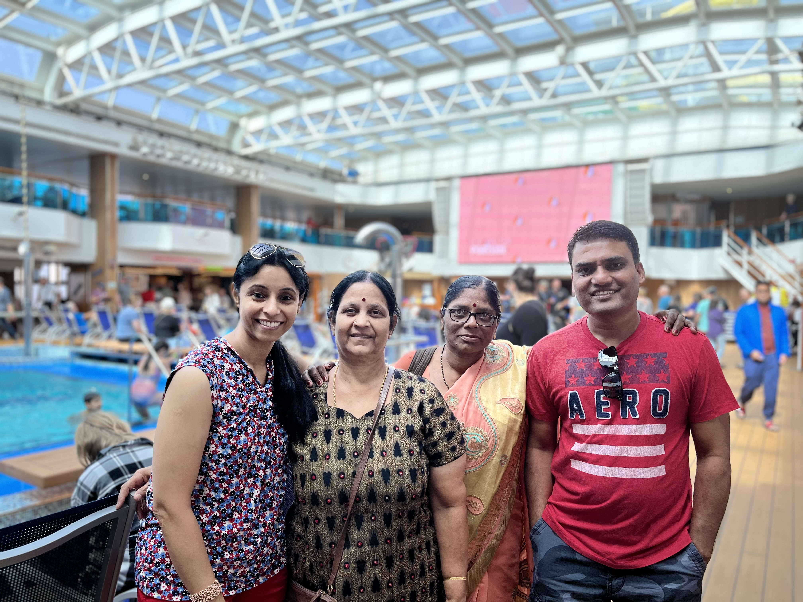
The whole day was only on travel. After I got up, I went to the 9th floor and had coffee. From the coffee machine in a cup, we took hot coffee; milk and sugar we can add as per the requirement. I had this coffee several times a day. All the 7 days in the morning, I used to spend some time walking. After the bath, from the buffet table, I preferred toasted bread, butter, some fruits, and yogurt. For lunch, we used to take from the Masala Tiger buffet counter. Normally we used to take butter naan, dal, some rice, vegetables, and dahi vada. Except for an hour's nap in the room, I spent the whole day roaming around the ship. In between, I was taking coffee with finger chips or plain potato chips.
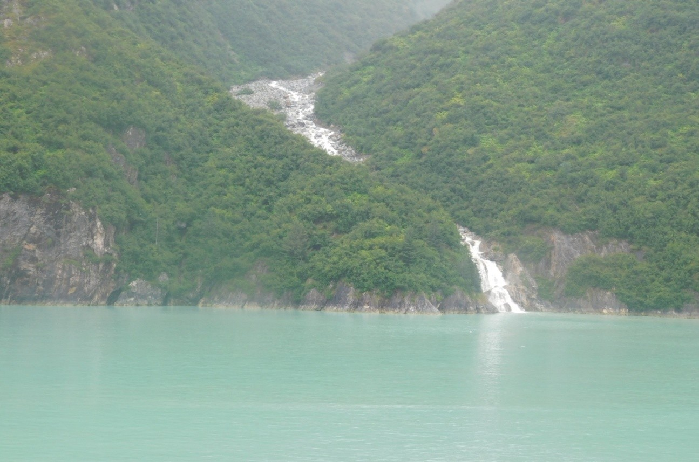
The cruise was going in the narrow path between two mountains. Some mountains were mostly covered by ice. In these small islands, I understand, no human beings are staying. It was cloudy and at times raining. The cruise was moving at dead slow speed. The cruise had to take lots of turns and go through the narrow passage between the tall mountains. At times the ship was stationary and took turns to enter the narrow bottlenecks. We saw waterfalls from the mountains. Also, huge ice slabs were floating on the sea. Through binoculars, people search for wild animals and birds.
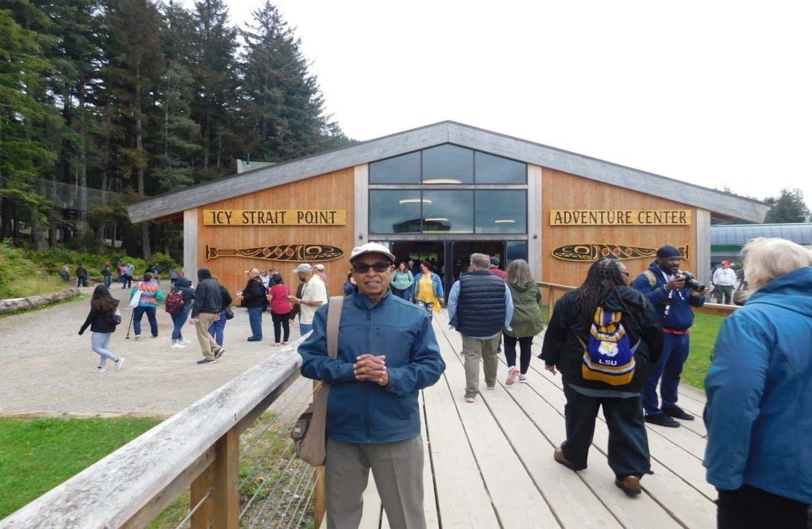
We reached around 11 AM a city called Icy Strait Point which belongs to Alaska State. After the breakfast, we got out of the cruise. The weather was quite chill. After getting down from the cruise, we reached the tourist point. There are two elevated points here. We can reach these points through a Gondola. For the first point, they don’t charge. For going to the second point, they charge $50 per head. We can go up and down more times also for a single ticket.
From the tourist point, we took the first Gondola and reached the first peak. Uma and Shashi stood in the queue for buying tickets for the second peak. (Taking money and giving a ticket is just a minute's job. But here, invariably the counter person would have a big smile and greet, then start enquiring like how do you do, weather conditions etc., and give tickets while conveying wishes and regards. For every person, he will take much more time than the actual requirement. Even in the buffet system, the first person in the queue will stand before a tray of food and think quite a lot whether to take or not; the remaining persons in the queue will never get irritated. This is the culture of America.)
So Shashi and Uma took some time to get tickets. Until that time, we all sat before a fireplace and warmed up ourselves. After they bought the ticket, we went by the second Gondola and reached the second peak point. The travel was about 7 minutes. The travel was quite scary; the valley was so deep. The second peak is called Juneau Icefield View Point.
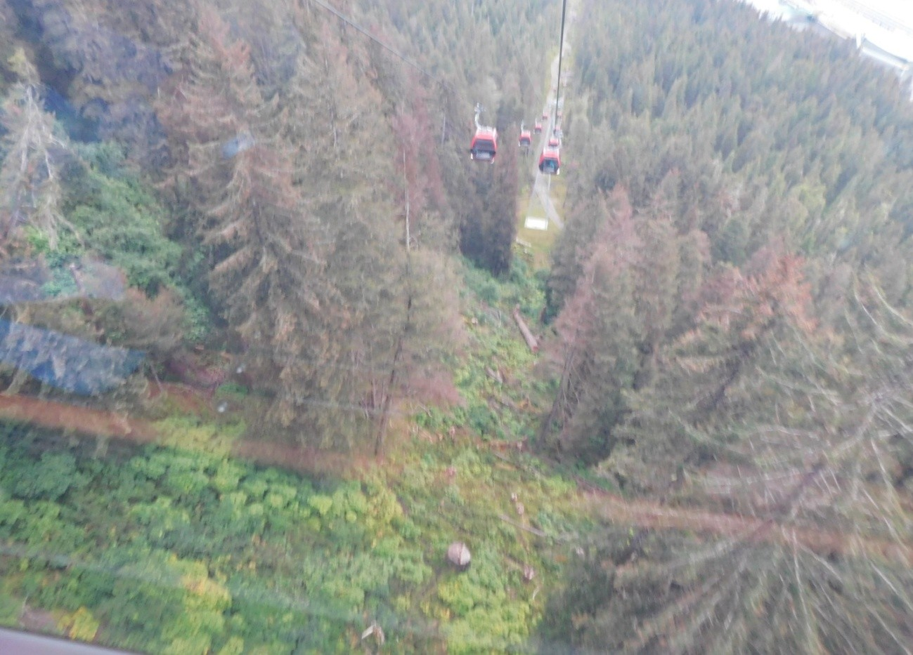
We three stayed at this peak, and Shashi, Uma, Tanvi, and Atharv went for the Zip Rider. This is definitely an adventurous ride and not recommended for senior citizens. The details are:
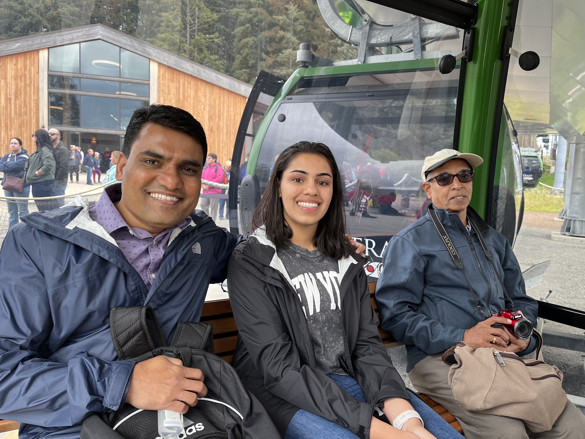
After the zip rider, Uma, Shashi, Tanvi, and Atharv came back to the same point, Juneau Icefield View Point. We all together came back to the tourist point by Gondola. While returning back to the ship, we saw a bald eagle, a huge bird with a white neck. These birds can be seen here only. We took lunch in the cruise and again we came out to this place and did walking. These places are totally pollution-free since there are no big roads or motor vehicles. Also, smoking is strictly prohibited in this city. We returned back to the cruise, which started to sail around 7 PM.
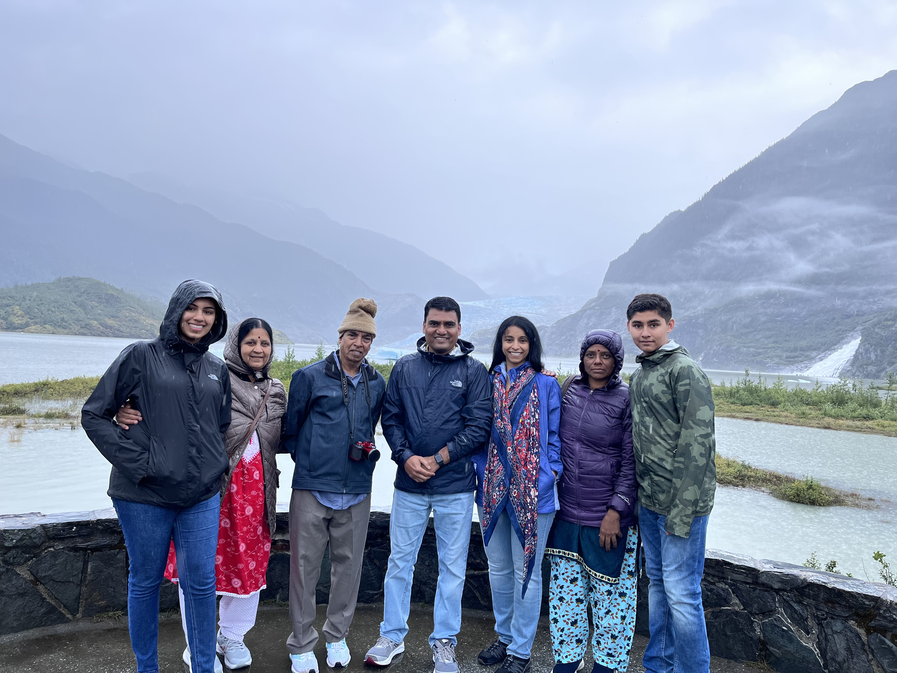
Early morning the cruise reached the city of Juneau. This is the capital of Alaska. We had our early breakfast and left the ship. Shashi booked for visiting Mendenhall Glacier. After getting down, we located our tourist point and boarded the bus. The bus travel was 25 minutes. In this place, 300 days in a year it would be raining. When we were in the city, that day was also raining. We reached Mendenhall Glacier tourist point. They screened a documentary movie about the Mendenhall glacier. After the movie, we went to view the glaciers. The weather was bad; it was cloudy and raining. We took some photos also. From the photo point, we saw the Nugget waterfalls. Since the rain continued, we three returned back to the tourist point; Uma, Shashi, Tanvi, and Athu walked towards Nugget waterfalls to have a closer look.
After they returned, we took the same bus and came back to the boarding point of the cruise and boarded the ship. Being that day was Tanvi’s birthday, we celebrated on the cruise.
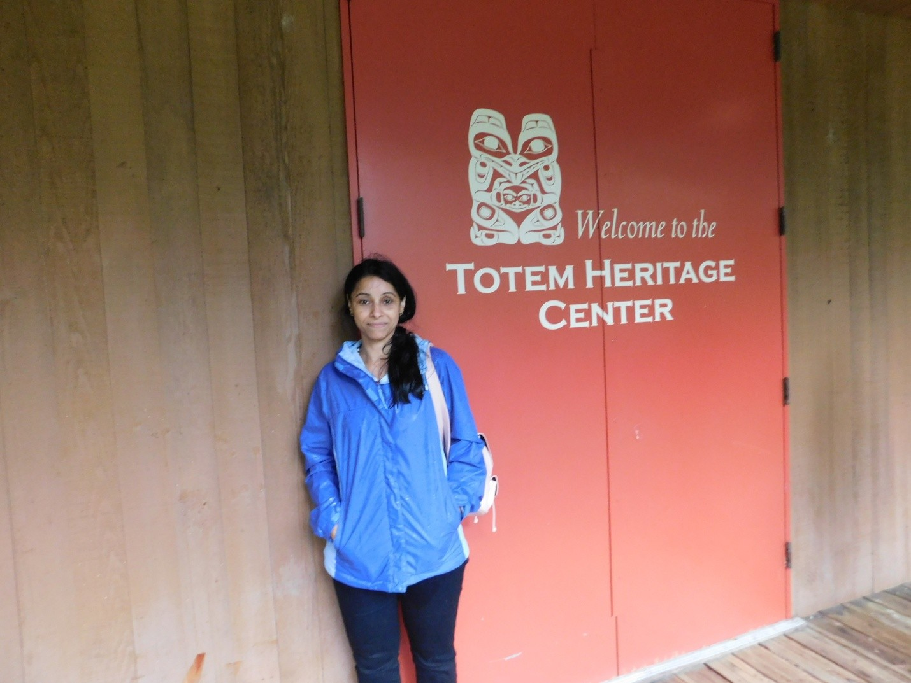
The Cruise reached Ketchikan city. This is another city of Alaska. After finishing our breakfast, we left the cruise and went into the city. Here also it was raining. In this city, Salmon fish is famous. We took a free bus and went to the Heritage Center. It is a small museum. We spent an hour and returned back to the city. We did some shopping in a mall and went back to the cruise. After that we had our lunch. The ship started to sail around 7 PM. Being that day was Shashi’s birthday, we celebrated during dinner.
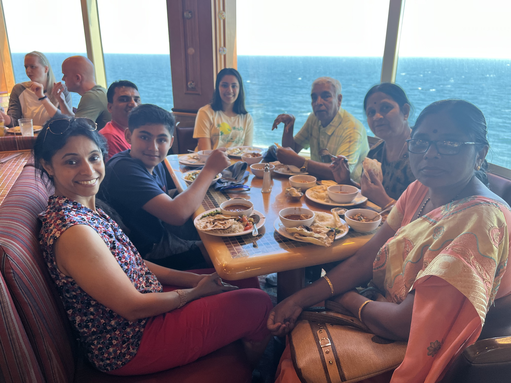
The whole day was gone only on travelling. Around 4 PM we reached close to Canada. In this region, whale movements are common. In the public address system, the crew of the ship were also announcing and telling the whales' location, like the left side of the ship etc. We could see a few whales also. They used to jump and invariably a few whales move together. Around 8 PM the cruise reached Victoria, a city belonging to Canada. This city is called the ‘city of parks.’ The halt was only 2 hours, so we didn’t get down from the cruise. Around 10 PM the ship started to move again towards Seattle.
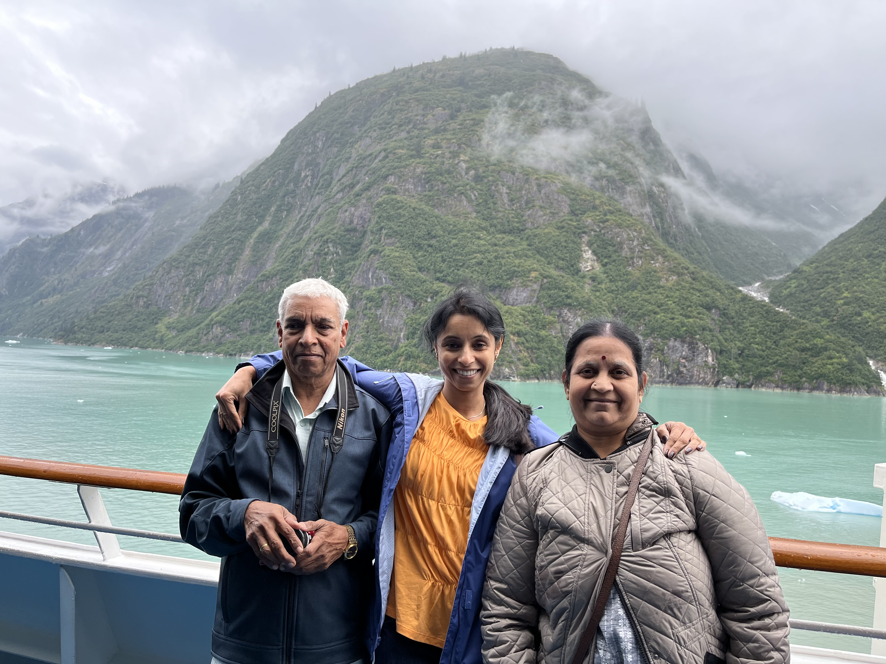
The cruise must have reached Seattle in the early morning. When I woke up early morning the ship was at Seattle Port. We quickly finished our breakfast. Previous night itself we packed our suitcases and kept them ready. We came out of the ship and again our passport and visa were checked by the US Customs and Border Protection. Again we took the cruise minibus and reached the parking spot, took our car, and reached home around 10 AM. This was my first long trip in the luxurious cruise and quite enjoyable.
We had a memorable 7-day Alaskan adventure aboard the Carnival Splendor. From the intricate operations of a 14-deck vessel to the breathtaking scenery of glaciers and narrow mountain passages, the journey was filled with family celebrations and cultural observations. Key highlights included visiting Icy Strait Point, the capital city of Juneau, and Ketchikan, along with witnessing the majestic Mendenhall Glacier and spotting whales off the coast of Victoria. It was a journey of firsts, combining the comforts of a luxury cruise with the raw beauty of the Alaskan wilderness.